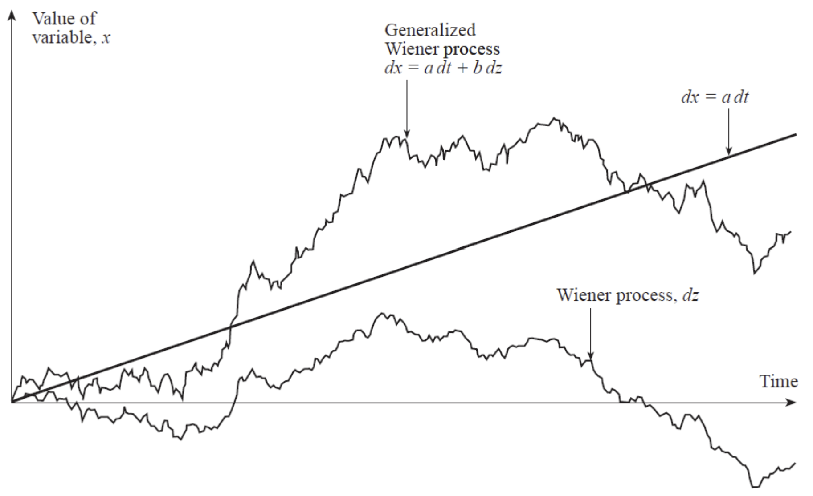

Chapter 13
위너과정 및 이토보조정리 (Wiener Processes and Ito’s Lemma)
시간의 흐름에 따라 불확실한 경로로 움직이는 변수를 확률과정(stochastic process)이라고 합니다. 시간의 흐름이 이산적으로 주어지는지, 연속적으로 주어지는지에 따라서 discrete variable와 continuous variable로 나눌 수 있으며, 앞서 살펴본 이항모형이 대표적인 discrete variable를 이용한 가치평가라고 할 수 있습니다.
이 장에서는 continuous variable을 가정하고, Wiener processes 등 중요한 확률변수를 살펴볼 것이며, 옵션의 가치평가에 매우 핵심적인 이토의 보조정리도 살펴볼 예정입니다.
14.1 The Markov Property
마코프 과정(Markov process)는 특수한 형태의 확률과정으로, 시간의 흐름에 따라 변하는 변수의 미래값은 오직 현재 값에만 영향을 받는 확률과정입니다.
즉, 일주일 단위 주가가 마코브 과정을 따른다면 다음 주의 주가는 오직 현재의 주가에만 영향을 받으며, 일주일 전의 주가는 아무런 영향을 주지 않는다는 의미입니다.
이는 효율적 시장가설(EMH, Efficient Market Hypothesis)의 weak-form을 만족한다는 의미와 유사합니다.
14.2 Continuous-time Stochastic Processes
먼저, 마코프 과정을 따르는 확률변수를 생각해보겠습니다. 현재 가격이 \(P_t\)이고, 하루동안의 가격변화는 표준정규분포 \(\phi(0,1)\)를 따른다고 가정하겠습니다. 그럼 2일간의 가격변화의 분포는 어떻게 될까요?
먼저, 2일간의 가격변화는 각각 하루씩 표준정규분포를 따르는 확률변수로 분할할 수 있습니다. 각 확률변수는 마코프 과정이므로 하루의 변화가 다음 하루의 변화에 영향을 주지않습니다. 즉, 각각 하루의 표준정규분포는 서로 독립입니다.
따라서, 2일간의 가격변화의 평균과 분산은 각각의 평균 및 분산의 합산이므로 \(\phi(0,2)\)를 따르게 될 것입니다. 이를 일반화한다면, 기간 \(T\)동안 주가의 변화가 \(\phi(0,T)\)를 따른다면 매우 작은 시간의 변화 \(\Delta t\)동안의 주가의 변화는 \(\phi(0,\Delta t)\)를 따른다고 할 수 있습니다.
여기서, 표준편차 \(\sigma\)는 기간의 누적에 \(\sqrt{\;\;}\)의 크기로 변화한다는 사실에 주목해야합니다.
Wiener Process
위너과정은 마코프 과정의 일종으로, 평균변화율(drift rate)이 0이고 변동률(variance rate)이 1인 확률과정입니다. 이는 물리학에서 분자의 음직임을 표현하는데 쓰이기도 하며, 브라운 운동(Brownian motion)이라고도 불립니다.
확률변수 \(z\)가 위너과정을 따른다는 것은, 아래 두 성질을 만족한다는 의미입니다.
Property 1. \(For\;\Delta t,\;\Delta z=\epsilon\sqrt{\Delta t}\;for\;\epsilon\sim\phi(0,1)\)이다.
Property 2. \(For\;any\;\Delta t_1\neq\Delta t_2.\;\Delta z_1\;and\;\Delta z_2\;are\;independent.\)
첫번째 성질을 통해 \(\Delta z\)의 평균은 0, 분산은 \(\Delta t\), 표준편차는 \(\sqrt{\Delta t}\)임을 알 수 있고, 두번째 성질을 통해 위너과정이 마코프과정의 한 종류임을 알 수 있습니다.
또한, \(\sqrt{\Delta t}>>\Delta t\;for\;\Delta t\rightarrow0\)이므로 단위시간 \(\Delta t\)가 작아지면 작아질수록 위너과정을 따르는 확률변수 \(\Delta z\)의 변동성(표준편차)은 단위시간 대비 매우 커짐을 알 수 있습니다.
이는 미시세상에서 위너과정을 따르는 확률변수가 매우 복잡하게 움직이는 것을 의미하며, 이를 통해 브라운 운동의 특징 두가지를 도출할 수 있습니다.
- 위너과정을 따르는 확률변수 \(z\)에 대해, 어떠한 구간의 시간을 관측하더라도 \(z\)의 경로의 길이의 기대값은 무한대로 발산한다.
- 특정 값의 \(z\)에 대해, 해당 값을 가지는 횟수는 어떠한 구간의 시간을 관측하더라도 무한대로 발산한다.
Generalized Wiener Process
앞서 평균변화율(drift rate)가 0이고 변동률(variance rate)이 1인 위너과정을 살펴보았습니다.
일반화된 위너과정(GWP)이란, 단위시간에 대해 평균변화율과 변동률이 상수 a, b로 주어진 위너과정을 말합니다.
즉, \(dx=a\,dt+b\,dW\)인 확률과정 \(x\)는 GWP를 따르게 됩니다.
여기서 \(dW\)는 위너과정이므로, 단위시간 \(\Delta t\)가 주어져 있다면 GWP를 따르는 확률변수 \(x\)의 변화량은 \(\Delta x=a\,\Delta t+b\,\epsilon\sqrt{\Delta t}\)으로 표현할 수 있습니다.
따라서, \(\Delta x\)의 평균은 \(a\,\Delta t\), 분산은 \(b^2\,\Delta t\)이며 변동성(표준편차)은 \(b\,\sqrt{\Delta t}\)가 되며, 단위시간이 충분히 작다면 \(\Delta x\sim\phi(a\Delta t,b^2\Delta t)\)로 근사할 수 있습니다.
\(x\)가 GWP를 따른다고 가정하고, 기간 \(T\)년과 충분히 작은 단위시간 \(\Delta t,\;\sum_{k=1}^N\Delta t=N\Delta t=T\)가 주어져있다고 가정하겠습니다.
각각의 \(\Delta x_i=a\Delta t+b\epsilon_i\sqrt{\Delta t}\)도 역시 GWP를 따르게 되며, 모두 독립입니다.
그러면, 확률변수 \(x\)의 기간중 누적변화 \(x_T-x_0=\sum\Delta x_i\)는 아래와 같이 전개할 수 있습니다.
\[\sum\Delta x_i=\sum a\Delta t+\sum b\epsilon_i\sqrt{\Delta t}=a\,T+b\sqrt{\Delta t}\sum \epsilon_i\]
각각의 \(\epsilon_i\sim\phi(0,1)\)은 독립이므로 \(\sum \epsilon_i\sim\phi(0,N)\)입니다. 따라서,
\[x_t-x_0\sim\phi(aT,b^2\Delta t\,N)=\phi(aT,b^2T)\]
위너과정, \(a\,dt\) 및 GWP의 경로를 도식화하면 아래와 같습니다.

Ito’s Process
일반화된 위너과정에서 평균변화율과 변동률이 상수로 주어졌다면, 이토과정에서는 평균변화율과 변동률이 시간과 확률변수에 대한 함수 \(a(x,t),\;b(x,t)\)로 주어지게 됩니다. 즉,
\[dx=a(x,t)\,dt+b(x,t)\,dW,\;\;\Delta x=a(x,t)\Delta t+b(x,t)\epsilon\sqrt{\Delta t}\]
이를 통해 이토과정도 마코프과정의 한 종류임을 알 수 있습니다.
14.3 The Process for a Stock Price
이제, 배당이 없는 주식에 대해 확률과정을 모델링해보겠습니다.
먼저 주가가 일반화된 위너과정(GWP)를 따른다고 가정한다면, 평균변화율과 변동률이 상수인 확률과정 \(dS=a\,dt+b\,dW\)를 생각할 수 있습니다.
그러나, 이는 주가의 변화분이 상수로 고정되어있다는 의미인데 현실과 부합하지 않는 부분이 존재합니다. 실제 주식투자자는 현재 주가가 높고 낮음에 관계없이 투자자금 대비 기대수익률을 고려하는데, 그렇다면 동일한 기대수익률 하에 주가의 변화분이 현재 주가에 따라 달라지기 때문입니다.
따라서, 주가 대신에 주가수익률이 GWP를 따른다고 가정하는 것이 보다 현실에 부합하게 되며 평균변화율이 \(\mu\), 변동률이 \(\sigma\)로 주어져있다면 주가수익률은 다음과 같은 이토과정을 따른다고 할 수 있습니다. 이러한 주식의 확률과정을 기하학적 브라운 운동(GBM, Geometric Brownian Motion)이라고도 합니다.
\[dS=\mu\,S\,dt+\sigma\,S\,dW \Rightarrow\]
\[\frac{dS}{S}=\mu\,dt+\sigma\,dW,\;\;\frac{\Delta S}{S}=\mu\Delta t+\sigma\epsilon\sqrt{\Delta t}\]
단위시간 \(\Delta t\)에 대해 평균은 \(\mu\Delta t\), 분산은 \(\sigma^2\Delta t\)이며 표준편차는 \(\sigma\sqrt{\Delta t}\)이고, 단위시간이 충분히 작다면 \(\frac{\Delta S}{S}\sim\phi(\mu\Delta t,\sigma^2\Delta t)\)입니다.
즉, \(\mu\)와 각각 단위시간에 대한 주가의 기대수익률과 표준편차를 연율로 환산한 것입니다.
단위시간에 대한 주가수익률은 정규분포로 근사할 수 있으나, 기간 \(T\)에 대한 주가 \(S_T-S_0\)는 평균변화율(\(\mu\,S_t\))이 상수로 주어져있지 않기 때문에 14.2의 GWP와 동일한 방법으로 전개할 수 없습니다.
대신에, 주가의 연환산 기대수익률 및 표준편차가 주어져있다면 \(\frac{\Delta S}{S}\sim\phi(\mu\Delta t,\sigma^2\Delta t)\)를 이용한 몬테카를로 시뮬레이션(Monte Carlo Simultation)을 통해 주가 \(S_T\)를 모델링할 수 있습니다.
14.6 Ito’s Lemma
앞선 장에서 우리는 파생상품의 가격결정이 기초자산과의 관계로부터 시작하여 기초자산의 현재가격을 통해 결정된다는 것을 살펴보았습니다. 즉, 파생상품의 가격은 기초자산의 가격의 함수입니다.
여기에 확률과정을 적용하면, 파생상품의 가격은 확률변수인 기초자산의 가격과 시간에 대한 함수형태로 표현할 수 있다는 것입니다. 그렇다면 확률변수를 이용한 함수는 어떤 방식으로 움직이며, 어떠한 확률과정을 따르게 되는걸까요? 여기서 이토의 보조정리(Ito’s Lemma)라고 불리는 아주 중요한 개념이 등장합니다.
이토의 보조정리란, 이토과정을 따르는 확률변수 \(dx=a(x,t)dt+b(x,t)dW\)와 확률변수 및 시간에 대한 함수 \(G=f(x,t)\)가 주어져있을 때, \(G\)가 다음과 같은 확률과정을 따르게 된다는 정리입니다.
\[dG=(\frac{\partial G}{\partial x}a+\frac{\partial G}{\partial t}+\frac{1}{2}\frac{\partial^2 G}{\partial x^2}b^2)dt+\frac{\partial G}{\partial x}b\,dW\]
즉, 평균변화율이 \(\frac{\partial G}{\partial x}a+\frac{\partial G}{\partial t}+\frac{1}{2}\frac{\partial^2 G}{\partial x^2}b^2\)이며 변동률이 \(\frac{\partial G}{\partial x}b\)인 이토과정을 따른다는 의미입니다.
이제, 파생상품의 가격 \(G=f(S,t)\)와 주가의 확률과정 \(dS=\mu\,S\,dt+\sigma\,S\,dW\)에 이토의 보조정리를 적용하겠습니다.
\[dG=(\frac{\partial G}{\partial S}\mu\,S+\frac{\partial G}{\partial t}+\frac{1}{2}\frac{\partial^2 G}{\partial S^2}\sigma^2\,S^2)dt+\frac{\partial G}{\partial S}\sigma\,S\,dW\]
즉, 파생상품의 가격 역시 기초자산과 유사한 이토과정을 따르게 되며, 동일한 위너과정 \(dW\)에 의해 그 경로가 결정됩니다. 이 개념은 다음 장의 BSM(Black Sholes Merton) 모형의 결과를 도출할 때 핵심개념으로 이용됩니다.
14.7 Application of Ito’s Lemma
Forward Contract
\(t\)시점의 선도가격은 \(F_0=S_0e^{r(T-t)}\)이므로, 무위험이자율이 주어져있다면 이토의 보조정리를 적용할 수 있습니다.
\[dF=(\frac{\partial F}{\partial S}\mu\,S+\frac{\partial F}{\partial t}+\frac{1}{2}\frac{\partial^2 F}{\partial S^2}\sigma^2\,S^2)dt+\frac{\partial F}{\partial S}\sigma\,S\,dW\]
\[=(e^{r(T-t)}\mu\,S-rSe^{r(T-t)})dt+e^{r(T-t)}\sigma\,S\,dW\]
\[\therefore\;dF=(\mu-r)\,F\,dt+\sigma\,F\,dW\]
The Lognormal property
\(G=ln\,S\)라고 하면, \(\frac{dG}{dS}=\frac{1}{S},\;\frac{dG}{dt}=0,\;\frac{d^2G}{dS^2}=-\frac{1}{S^2}\)
\[dG=(\frac{\partial G}{\partial S}\mu\,S+\frac{\partial G}{\partial t}+\frac{1}{2}\frac{\partial^2 G}{\partial S^2}\sigma^2\,S^2)dt+\frac{\partial G}{\partial S}\sigma\,S\,dW\]
\[=(\frac{1}{S}\mu\,S-\frac{1}{2}\frac{1}{S^2}\sigma^2S^2)dt+\frac{1}{S}\sigma\,S\,dW\]
\[\therefore\;dG=(\mu-\frac{1}{2}\sigma^2)dt+\sigma\,dW\]
이토의 보조정리에 따라, 이토과정을 따르는 주가에 자연로그를 취하면 GWP를 따르게 됩니다. 이제, 14.2의 전개식을 적용하면 기간 \(T\)에 대한 주가의 로그수익률이 정규분포를 따르게 됨을 유도할 수 있습니다.
\[ln\,S_T-ln\,S_0=ln\frac{S_t}{S_0}\sim\phi((\mu-\frac{1}{2}\sigma^2)T,\sigma^2\,T)\]